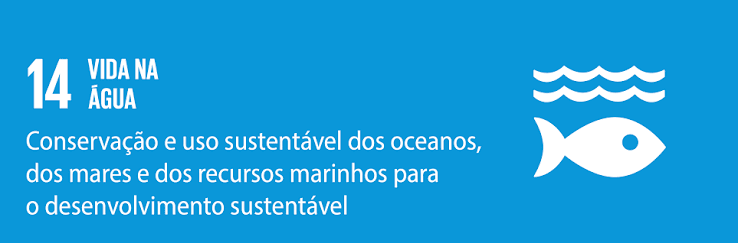

A vida embaixo d'água abriga a maior e mais complexa biosfera do planeta, desempenhando um papel crucial no equilíbrio climático, na produção de oxigênio e na manutenção da biodiversidade global. No entanto, os oceanos e mares enfrentam uma pressão sem precedentes devido à ação humana, sofrendo com os impactos diretos da poluição por plásticos, da pesca predatória e da acidificação das águas decorrente das mudanças climáticas. Diante desse cenário, compreender a dinâmica desses ecossistemas e a urgência de sua preservação não é apenas uma questão de conservação ambiental, mas um requisito fundamental para garantir a segurança alimentar, a economia e a sobrevivência de bilhões de pessoas que dependem diretamente dos recursos marinhos.
Nesse contexto, o Objetivo de Desenvolvimento Sustentável 14 (ODS 14) da ONU, intitulado "Vida na Água", surge como uma diretriz global indispensável para mitigar a degradação desses habitats e promover uma governança sólida sobre os recursos marinhos. A concretização de suas metas, contudo, esbarra em um duplo desafio: a necessidade de fiscalização rigorosa contra crimes ambientais em águas internacionais e o financiamento de pesquisas científicas capazes de mapear os impactos climáticos de longo prazo. Portanto, reverter o colapso dos oceanos exige uma transição urgente para a chamada economia azul, onde o desenvolvimento econômico de zonas costeiras e a exploração comercial caminhem de forma indissociável com a restauração ecológica e o respeito aos limites da natureza.
O objetivo central do ODS 14 (Vida na Água) é proteger o maior e mais vital ecossistema do nosso planeta: os ambientes marinhos. Ele busca garantir que os oceanos, mares e recursos costeiros sejam conservados e geridos de forma sustentável, equilibrando a preservação ecológica com o desenvolvimento socioeconômico global.
Apesar de sua enorme importância para o equilíbrio ambiental, os ecossistemas marinhos enfrentam diversas ameaças causadas principalmente pelas atividades humanas. Entre os problemas mais preocupantes estão a poluição por plásticos, o descarte inadequado de resíduos, o derramamento de petróleo, a pesca excessiva e o aquecimento global. Essas ações provocam a destruição de habitats naturais, ameaçam a sobrevivência de inúmeras espécies e comprometem o equilíbrio dos oceanos. Além disso, a contaminação das águas pode atingir toda a cadeia alimentar, afetando não apenas os animais marinhos, mas também os seres humanos.
A ODS 14 estabelece metas importantes para garantir a conservação dos oceanos e o uso sustentável de seus recursos. Entre elas estão a redução da poluição marinha, a proteção dos ecossistemas costeiros, o combate à pesca ilegal e predatória, a preservação de áreas marinhas protegidas e o fortalecimento das pesquisas científicas relacionadas à vida nos oceanos. Essas iniciativas buscam recuperar os ambientes degradados e garantir que as futuras gerações também possam usufruir dos benefícios proporcionados pelos recursos marinhos.
A proteção da vida marinha não depende apenas de governos e organizações ambientais, mas também das atitudes individuais de cada cidadão. Pequenas ações cotidianas podem contribuir significativamente para a conservação dos oceanos, como evitar o uso excessivo de plásticos descartáveis, realizar o descarte correto do lixo, participar de campanhas de limpeza de praias e rios, economizar água e consumir pescados provenientes de fontes sustentáveis. Além disso, compartilhar informações sobre a importância da preservação marinha ajuda a conscientizar outras pessoas e fortalece a construção de uma sociedade mais responsável ambientalmente.
Os oceanos desempenham funções essenciais para a manutenção da vida na Terra. Eles ajudam a regular a temperatura do planeta, absorvem parte do dióxido de carbono presente na atmosfera e abrigam uma imensa variedade de espécies. Também são fundamentais para a alimentação, o transporte marítimo, o turismo e a economia de milhões de pessoas. Dessa forma, preservar os ambientes marinhos significa proteger não somente a biodiversidade aquática, mas também a qualidade de vida e o futuro de toda a humanidade.
A preservação da vida marinha é uma responsabilidade coletiva e uma necessidade urgente para garantir o equilíbrio ambiental do planeta. A ODS 14 representa um compromisso global com a proteção dos oceanos e a utilização consciente de seus recursos. Entretanto, alcançar esse objetivo depende da participação conjunta de governos, empresas, instituições científicas e da população. Cuidar dos oceanos hoje é garantir que as próximas gerações possam viver em um planeta mais saudável, equilibrado e sustentável. coletiva e uma necessidade urgente para garantir o equilíbrio ambiental do planeta. A ODS 14 representa um compromisso global com a proteção dos oceanos e a utilização consciente de seus recursos. Entretanto, alcançar esse objetivo depende da participação conjunta de governos, empresas, instituições científicas e da população. Cuidar dos oceanos hoje é garantir que as próximas gerações possam viver em um planeta mais saudável, equilibrado e sustentável.